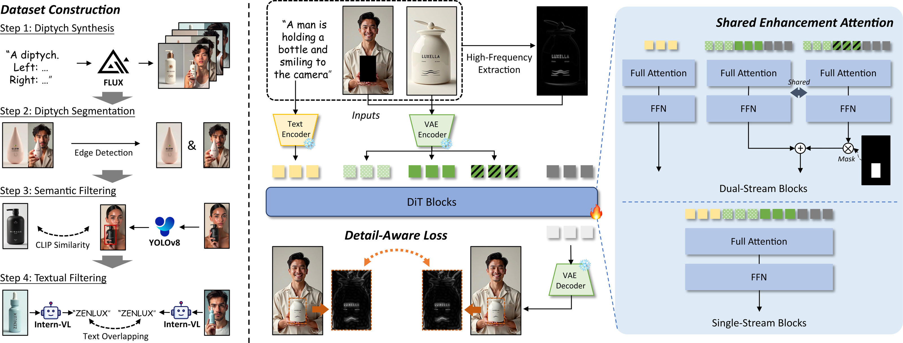
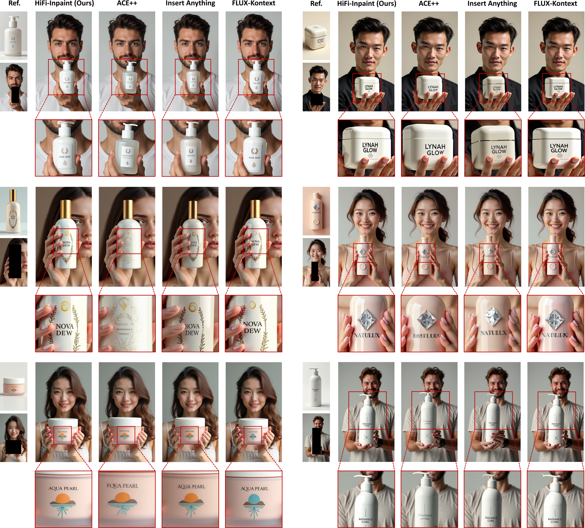
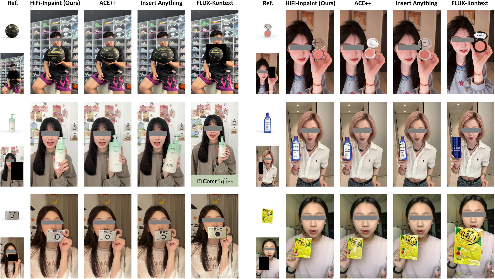
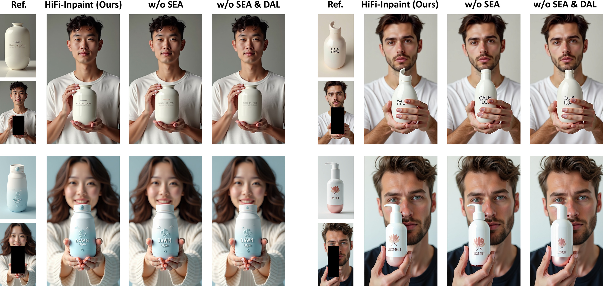
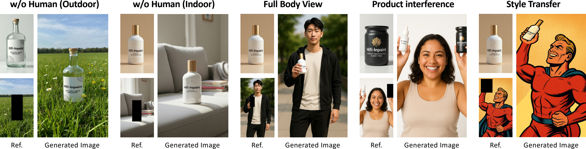

Human-product images, which showcase the integration of humans and products, play a vital role in advertising, e-commerce, and digital marketing. The essential challenge of generating such images lies in ensuring the high-fidelity preservation of product details. Among existing paradigms, reference-based inpainting offers a targeted solution by leveraging product reference images to guide the inpainting process. However, limitations remain in three key aspects: the lack of diverse large-scale training data, the struggle of current models to focus on product detail preservation, and the inability of coarse supervision for achieving precise guidance. To address these issues, we propose HiFi-Inpaint, a novel high-fidelity reference-based inpainting framework tailored for generating human-product images. HiFi-Inpaint introduces Shared Enhancement Attention (SEA) to refine fine-grained product features and Detail-Aware Loss (DAL) to enforce precise pixel-level supervision using high-frequency maps. Additionally, we construct a new dataset, HP-Image-40K, with samples curated from self-synthesis data and processed with automatic filtering. Experimental results show that HiFi-Inpaint achieves state-of-the-art performance, delivering detail-preserving human-product images.

We construct a large-scale dataset of 43,632 high-quality human-product samples via self-synthesis and automatic filtering to enable robust training.
SEA refines fine-grained product details by injecting high-frequency map tokens into dual-stream DiT blocks with lightweight parameter sharing.
DAL adds high-frequency pixel-level supervision, encouraging accurate reconstruction of subtle textures, patterns, and product text.
| Method | CLIP-T | CLIP-I | DINO | SSIM | SSIM-HF | LAION-Aes | Q-Align-IQ |
|---|---|---|---|---|---|---|---|
| Paint-by-Example | 31.6 | 69.1 | 63.4 | 54.0 | 34.9 | 4.09 | 4.06 |
| ACE++ | 34.9 | 93.1 | 90.7 | 58.3 | 37.2 | 4.18 | 4.00 |
| Insert Anything | 35.3 | 94.1 | 89.8 | 62.1 | 40.0 | 4.20 | 3.89 |
| FLUX-Kontext | 36.6 | 82.5 | 63.1 | 51.6 | 32.0 | 4.54 | 3.74 |
| HiFi-Inpaint (Ours) | 36.1 | 95.0 | 91.9 | 63.4 | 42.9 | 4.40 | 4.36 |
Quantitative comparison on HP-Image-40K test set. HiFi-Inpaint achieves state-of-the-art performance across text alignment, visual consistency, and generation quality metrics.
| Method | CLIP-T | CLIP-I | DINO | SSIM | SSIM-HF | LAION-Aes | Q-Align-IQ |
|---|---|---|---|---|---|---|---|
| Paint-by-Example | 27.1 | 56.2 | 24.3 | 50.8 | 35.7 | 4.34 | 2.23 |
| ACE++ | 28.2 | 80.1 | 74.2 | 53.5 | 36.6 | 3.90 | 3.47 |
| Insert Anything | 28.9 | 83.1 | 77.5 | 55.1 | 37.8 | 3.95 | 3.48 |
| FLUX-Kontext | 29.0 | 59.9 | 55.7 | 44.6 | 34.3 | 4.30 | 2.91 |
| HiFi-Inpaint (Ours) | 29.7 | 86.8 | 79.8 | 60.5 | 44.1 | 4.27 | 3.29 |
Quantitative comparison on real-world data. HiFi-Inpaint remains the strongest overall performer across visual consistency and detail preservation metrics.
| Syn. Data | DAL | SEA | CLIP-T | CLIP-I | DINO | SSIM | SSIM-HF | LAION-Aes | Q-Align-IQ |
|---|---|---|---|---|---|---|---|---|---|
| 35.4 | 91.8 | 85.4 | 57.7 | 38.4 | 4.29 | 4.40 | |||
| ✓ | 35.8 | 94.5 | 89.9 | 62.4 | 41.2 | 4.32 | 4.23 | ||
| ✓ | ✓ | 36.2 | 94.6 | 90.7 | 62.3 | 41.8 | 4.33 | 4.28 | |
| ✓ | ✓ | 35.9 | 92.2 | 87.6 | 59.8 | 40.3 | 4.34 | 4.47 | |
| ✓ | ✓ | ✓ | 36.1 | 95.0 | 91.9 | 63.4 | 42.9 | 4.40 | 4.36 |
Quantitative ablation analysis verifies that each component contributes to overall performance: training with synthetic data improves visual consistency, DAL strengthens high-frequency pixel-level supervision, and SEA further enhances detail preservation.

HiFi-Inpaint preserves fine-grained textures and product details on synthesized human-product images. Click for better view.

Compared to prior methods, HiFi-Inpaint generates high-fidelity human-product images with better preservation of fine-grained textures and text details. Click for better view.

Qualitative ablation results show that removing SEA reduces fine-grained feature enhancement, while removing both SEA and DAL further degrades texture fidelity and product text clarity, highlighting the importance of each design choice.

We further evaluate our HiFi-Inpaint on several hard cases, demonstrating its potential to generalize to a broader range of scenarios.
@inproceedings{hifi_inpaint_2026,
title={HiFi-Inpaint: Towards High-Fidelity Reference-Based Inpainting for Generating Detail-Preserving Human-Product Images},
author={Liu, Yichen and Zhou, Donghao and Wang, Jie and Gao, Xin and Liu, Guisheng and Li, Jiatong and Zhang, Quanwei and Lyu, Qiang and Guo, Lanqing and Wen, Shilei and Wang, Weiqiang and Heng, Pheng-Ann},
booktitle={CVPR},
year={2026},
note={Placeholder BibTeX, update with final metadata}
} Dataset
Dataset